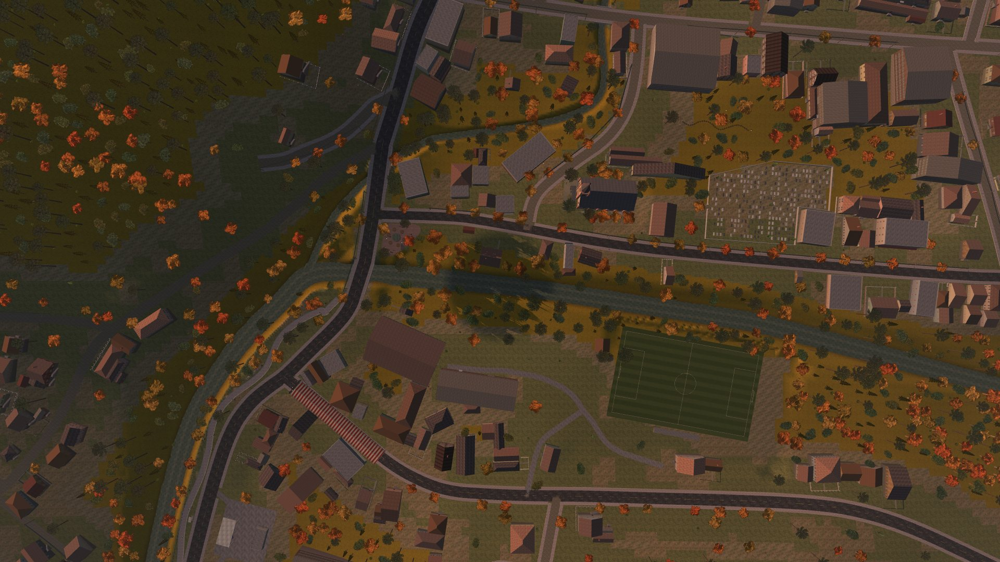

Cartão
.cartao: passe o mouse, a lanterna acende onde ele está.

Sistema visual
As cores, as letras, os espaços e o movimento do site de Teewald, tirados do próprio jogo. Tudo mora em css/site.css, em camadas; esta página mostra cada peça funcionando.
Princípios
O fundo é quase preto e quente, como a noite de Teewald. A luz é rara, e por isso chama o olho.
O dourado marca o que se pode fazer: botões, links, a página atual. O vermelho é perigo e sangue, e aparece pouco.
Sem canto arredondado. Botões chanfrados como as janelas do menu, ícones em pixel e a letra dos menus do jogo.
O movimento entra com calma e se assenta rápido. Tudo para quando o sistema pede menos movimento.
Cores
Os componentes usam só os papéis (--cor-*). A paleta bruta (--noite-950, --lampiao-400...) fica por trás deles, num lugar só.
--cor-fundo--cor-fundo-2--cor-superficie--cor-superficie-2--cor-borda--cor-borda-viva--cor-texto-forte--cor-texto--cor-texto-suave--cor-texto-fraco--cor-destaque--cor-destaque-forte--cor-metal--cor-perigo--cor-sangue--cor-frio--papel-200--bilheteLetras
Cada letra tem um papel e não pega o dos outros. As de título e de menu são as mesmas do jogo.
Títulos · --fonte-titulo
Grenze Gotisch
O gótico do logo. Só em títulos grandes.
Menus e rótulos · --fonte-ui
VT323 ▶
A letra dos menus do jogo: botões, rótulos, legendas, números.
Texto · --fonte-texto
Spectral
Para ler: parágrafos, citações e perguntas.
Documentos e bilhetes · --fonte-maquina · --fonte-mao
Special Elite
Caveat, a lápis
--t-8Teewald--t-7Mato do chá--t-6Procura-se--t-5Alguma coisa anda no mato.--t-4Survival horror clássico--t-3Começou longe, no interior. Depois foi chegando perto das casas.--t-2Texto corrido, o tamanho de leitura do site.--t-1 · --t-0Notas, fichas e letras miúdas do rodapé.--ui-1 a --ui-5▶ INÍCIO HISTÓRIA PRESSIONE ENTEREspaço
Margens e intervalos andam numa escala de --e-1 (4 px) a --e-10 (128 px). As seções respiram com --secao e a margem lateral com --margem, que crescem com a tela.
--e-2 · 8--e-4 · 16--e-5 · 24--e-6 · 32--e-7 · 48--e-8 · 64--e-9 · 96--e-10 · 128Movimento
Cinco durações (--dur-1 120 ms a --dur-5 1,6 s) e quatro curvas. A mais usada é --ease-sai: começa rápido e assenta devagar.
--ease-sai--ease-meio--ease-entra--ease-molaRevelar ao rolar
Qualquer bloco ganha data-revela (sobe), ="esquerda", ="direita", ="zoom", ="imagem" (cortina de baixo para cima) ou ="papel" (cai girando, como papel pregado). Um grupo com data-revela-filhos aparece um a um, de --passo em --passo. Fotos de fundo com data-paralaxe="0.3" andam mais devagar que a página.
data-revelasobe e aparece
="esquerda"entra pela esquerda
="direita"entra pela direita
="zoom"cresce um pouco

="imagem"
Componentes
Botões · .botao .botao-grande .botao-pequeno .botao-contorno
Selos, fichinhas e teclas · .selo .fichinha .tecla
Cabeçalho de seção · .rotulo h2 .regua .intro
Rótulo
A introdução fica num tamanho maior, com no máximo umas sessenta letras por linha.
Agora eu só pesco de dia. E tu devia fazer o mesmo.
Bilhete a lápis · .bilhete
.cartao: passe o mouse, a lanterna acende onde ele está.
 Selo
Selo.cartao-imagem
.trancadaAbas · role="tablist"
Painel da primeira aba. As setas do teclado trocam de aba.
Painel da segunda aba.
Divisor · .divisor